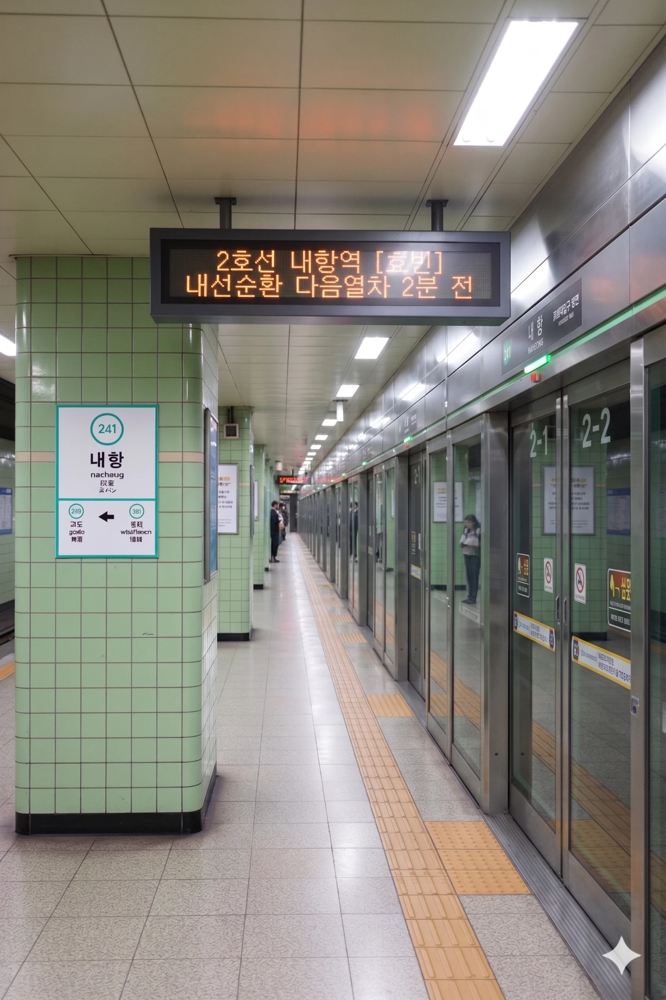

1. 개요
효빈 도시철도 2호선 241번 및 7호선 713번. 효빈광역시 중구 내항동 122 지하 소재. 2호선 급행열차가 정차하여 구도심의 빠른 이동을 책임지고 있다.
인근에는 효빈의 근현대 교통사를 한눈에 볼 수 있는 전차기념박물관과 효빈의 오래된 항구인 효빈내항이 자리 잡고 있어, 구도심 특유의 낭만을 찾아오는 관광객들의 발걸음이 끊이지 않는 주요 거점 역할을 수행하고 있다.
2. 역 정보
효빈내항(구 효빈항) 근처에 있는 역으로, 내항 관광단지와 저층 주거단지 정도만 주변에 위치한다. 내항동 자체가 중구 변두리 지역이라 효빈항이 1980년대 남구 쪽으로 이전한 이후에는 많이 공동화되어버린 상황이다.
7호선 내항역은 1932년 개업하여 매우 오랜 역사를 자랑하는 노면전차(트램) 정거장이며, 2호선은 지하로 통과한다. 또한 2호선 급행열차가 필수 정차하는 역으로, 중앙로역과 월천역 사이의 먼 거리를 무정차로 빠르게 이어주는 꿀 같은 역이기도 하다. 출구 인근에는 파출소, 119안전센터, 우체국 등 주요 관공서가 밀집해 있어 구도심 내에서도 행정과 치안의 중심지 역할을 하고 있다.
3. 역 주변 정보
3.1. 출구 정보

 내항역 출구 정보
내항역 출구 정보
|
||
|---|---|---|
| 번호 | 주요 시설 및 방향 | 비고 |
| 1 | 7호선 내항역, 내항동행정복지센터, 내항시장, 내항파출소 | |
| 2 | 내항초등학교, 내항우체국 | |
| 3 | 효빈내항, 전차기념박물관 | |
| 4 | 내항중학교, 내항119안전센터 | |
4. 일평균 이용객
| 내항역 이용객 통계 | ||||
|---|---|---|---|---|
| 연도 |
|
|
총합 | 비고 |
| 2020년 | 7,062명 | 1,913명 | 8,975명 | |
| 2021년 | 7,207명 | 1,953명 | 9,160명 | |
| 2022년 | 8,190명 | 2,220명 | 10,410명 | |
| 2023년 | 8,273명 | 2,243명 | 10,516명 | |
| 2024년 | 8,192명 | 2,221명 | 10,413명 | |
효빈에서 환승역 중 가장 이용객이 적은 역으로, 비환승역 1위인 고송역과는 4배 정도 차이가 난다. 이는 내항동 자체의 인구가 지속적으로 감소하여 현지 주민 수요가 매우 적은 데다가, 가장 이용객이 몰릴 법한 시장통 수요조차 7호선의 내항시장역과 만마루역으로 철저하게 분산되기 때문이다.
결과적으로 내항역의 승하차 통계는 사실상 전차기념박물관이나 효빈내항을 찾아오는 관광객 수요가 거의 전부를 떠받치고 있다고 해도 과언이 아니다. 그나마 2호선 급행열차가 정차하는 덕분에 주말이나 관광 성수기에는 제법 북적이는 모습을 보여준다.
5. 승강장
5.1. 2호선 승강장

| 고도 (완행) · 중앙로 (급행) ↑ | |||
| 하 | │ | │ | 상 |
| ↓ 월천 (완행/급행 공용) | |||
| 상 |
효빈 도시철도 2호선 (완행/급행 공용)
|
중앙로·북효빈역·입희·중수 방면 (급행 정차) |
| 하 |
효빈 도시철도 2호선 (완행/급행 공용)
|
월천 · 효빈공단 · 우전 방면 (급행 정차) |
5.2. 7호선 승강장
| 명일 ↑ | |||
| 하 | │ | │ | 상 |
| ↓ 내항시장 | |||
| 상 | 7 효빈 도시철도 7호선 | 어간중앙 방면 |
| 하 | 7 효빈 도시철도 7호선 | 중보로 · 효빈대입구 방면 |
6. 연계 교통
6.1. 버스
주요 정류장 위치
- 내항역 3번 출구 (01-011): 3번 출구 앞
- 내항역 4번 출구 (01-012): 4번 출구 앞
| 정류소명 | 노선 종류 | 노선 번호 |
|---|---|---|
| 내항역 3번출구 (01-011) | 급행 | 01 |
| 간선 | 11, 17, 141, 151, 154, 173 | |
| 마일 | 내항01 | |
| 내항역 4번출구 (01-012) | 급행 | 01-1 |
| 간선 | 11-1, 71, 411, 511, 514, 713 | |
| 마을 | 내항01-1 |
7. 기타
- 시장통을 누비는 트램의 낭만 (feat. 애니메이션 감성): 내항역은 중구의 오래된 도심인 내항동에 위치한다.
- 효빈의 에노덴: 이곳의 7호선 승강장은 '내항시장' 한복판을 가로지르는 도로 위에 있다. 낡은 상가와 시장 좌판 사이를 최신식 트램이 아슬아슬하게 스쳐 지나가는 풍경이 마치 일본 가마쿠라의 '에노덴(Enoden)'이나 애니메이션 속 한 장면을 연상케 한다.
- 성지순례의 포토존: 특정 애니메이션 캐릭터의 이름과 겹치지는 않지만, 이 특유의 '레트로 감성' 때문에 수많은 서브컬처 팬들이 트램 사진을 찍으러 오는 필수 출사지가 되었다. 시장 상인들도 이를 반겨 7호선 트램 그림이 그려진 간식을 팔기도 한다.
- 지하 요새로 가는 입구: 지상의 낭만적인 풍경과 달리, 2호선으로 갈아타기 위해서는 좁고 깊은 지하 통로를 내려가야 한다. 1990년대에 지어진 2호선 역사는 타일 마감이 독특하여, 팬들 사이에서는 "이세계로 통하는 던전 입구"라고 불린다. 지상의 활기찬 시장 분위기와 지하의 차분한 분위기가 극명한 대비를 이룬다.
- 2호선 급행열차의 마지막 관문: 2호선 외선순환을 타는 급행열차가 기점인 월천역으로 가기 전 마지막으로 정차하는 역이다. 환승역임에도 이용객이 가장 적어 조용하지만, 중앙로역에서부터 논스톱으로 쏴주는 급행열차 덕에 내항시장 상인들이나 관광객들에게는 은근히 꿀 노선으로 통한다.
다만 월천역까지의 급행 거리가 3.6km나 되어서 대체 어디로 돌아가는 거냐는 미스터리가 있다. - 전차기념박물관의 관문: 3번 출구로 나가면 도보 3분 거리에 전차기념박물관이 자리 잡고 있다.
이곳은 과거 효빈 시내를 누비던 구형 노면전차들이 전시되어 있어 철도 동호인들과 가족 단위 관광객들에게 인기가 높다.
역내에도 박물관을 홍보하는 과거 전차 시절의 흑백 사진들이 길게 전시되어 있어, 역을 빠져나가기 전부터 이미 박물관에 온 듯한 분위기를 자아낸다.
특히 주말이면 기념품점에서 파는 트램 모형을 사기 위해 줄을 서는 진풍경이 펼쳐지기도 한다.
어린이들보다 어른이(철덕)들이 더 지갑을 털린다는 슬픈 전설이 있다. - 수요 분산의 함정: 명색이 2호선과 7호선의 환승역임에도 이용객 수가 저조한 이유는 승객들의 목적지 핀포인트가 묘하게 어긋나 있기 때문이다.
내항시장으로 장을 보러 가는 사람들은 당연히 시장 한복판에 떨어지는 내항시장역을 이용하고, 주거 단지로 가는 사람들은 만마루역에서 내린다.
결국 내항역에서 내리는 사람들은 박물관 관람객, 환승 통로를 걸어가는 환승객, 혹은 초행길이라 실수로 내항역에서 내린 사람들뿐이다.
이 때문에 평일 대낮에는 플랫폼이 믿을 수 없을 정도로 한산해 전세 낸 듯한 기분을 느낄 수 있다. - 갈매기가 날아드는 지하철역: 3번 출구 방향이 효빈내항과 맞닿아 있다 보니, 바다 냄새가 2호선 지하 깊숙한 환승 통로까지 은은하게 스며들어 온다.
여름철이나 만조 때면 짠내가 훅 끼치며, 심지어 지상에 노출된 7호선 플랫폼에는 가끔 갈매기들이 날아와 앉아 승객들의 간식을 노리기도 한다.
역무원실에는 아예 '갈매기 쫓는 용도'로 지정된 빗자루가 비치되어 있으며, 역무원들의 가장 큰 고충 중 하나가 비둘기가 아닌 갈매기 배설물 청소라고 한다.
관광객들에게는 이조차도 '항구도시 지하철역의 낭만'으로 포장되어 SNS에 자주 업로드된다. - 환승 통로 하체 강제 단련장: 지상 도로 한복판에 있는 7호선 승강장에서 지하 깊숙한 2호선 승강장까지 내려가는 과정은 가히 지옥의 에스컬레이터라 불릴 만하다.
공간이 협소하여 엘리베이터가 구석진 곳에 숨어 있고, 끝없는 계단과 길고 가파른 에스컬레이터를 연달아 타야 한다.
이곳에서 매일 출퇴근 환승을 하면 강제로 하체 웨이트 트레이닝이 되어 헬스장에 갈 필요가 없다는 우스갯소리가 있다.
짐이 많은 시장 상인들이나 어르신들은 이 환승 통로를 극도로 기피하여, 아예 버스를 타고 다른 역으로 우회하는 경우가 잦다. - 완벽한 치안과 응급구조의 요새: 내항역 출구 주변에는 내항파출소와 내항119안전센터가 말 그대로 코앞에 붙어 있다.
1번 출구로 나가면 경찰차가 대기 중이고, 4번 출구로 나가면 소방차가 출동을 준비하는 진풍경을 볼 수 있다.
덕분에 역내에서 발생하는 응급 환자나 취객 난동 등 사건 사고에 대한 출동 속도는 효빈 도시철도 1위를 자랑한다.
하지만 실제로 이들이 가장 많이 하는 업무는 전차기념박물관으로 가는 길을 묻는 길 잃은 관광객들을 안내하는 일이라고 한다. - 우체국의 숨겨진 굿즈 성지: 2번 출구 인근에 있는 내항우체국은 평범한 우체국처럼 보이지만, 사실 철덕들과 관광객들의 필수 방문 코스다.
효빈우정본부와 협력하여 이곳에서만 파는 '효빈 트램 운행 재개 기념 한정판 우표'와 엽서를 상시 판매하기 때문이다.
관광객들은 전차기념박물관을 관람한 후 이곳에 들러 트램 엽서를 사고, 내항역 스탬프를 찍어 자기 자신에게 편지를 보내는 것을 하나의 여행 코스로 삼고 있다.
우체국 직원들 역시 이러한 인기에 적응하여 창구 한편을 아예 굿즈 진열대로 개조해 놓았다. - 2호선 급행열차의 후폭풍: 2호선 승강장은 섬식 승강장에 터널 폭이 좁은 구형 구조로 설계되어 있어 열차풍이 상당히 거세다.
특히 중앙로역에서부터 무정차로 달려온 2호선 급행열차가 무서운 속도로 역에 진입할 때면 승강장의 광고판이 덜컹거릴 정도로 엄청난 후폭풍이 몰아친다.
멋모르고 스크린도어에 바짝 붙어 있던 관광객들은 급행열차가 일으키는 바람과 굉음에 깜짝 놀라 주저앉는 일도 종종 발생한다.
철도 동호인들 사이에서는 '급행열차의 기백을 몸으로 느낄 수 있는 명당'으로 통하기도 한다. - 마스코트 캐릭터의 미묘한 신경전: 내항역 대합실에는 2호선 마스코트 하루빈과 7호선 마스코트 임세정·임세하 자매의 등신대가 나란히 서 있다.
재미있는 점은 2호선의 컬러(#00CCAA)가 뱅드림의 아오바 모카를, 7호선의 컬러(#FF8899)가 치하야 아논을 연상시키기 때문에 서브컬처 팬들이 캐릭터 밈(meme)을 활용한 포스트잇이나 굿즈를 등신대 주변에 몰래 두고 간다는 것이다.
하루빈 등신대 앞에는 빵이, 임세하 등신대 앞에는 밴드 굿즈가 놓이는 기현상이 발생한다.
결국 월천관리역 측에서 포기하고 등신대 옆에 작은 유리 장식장을 마련해 주어 공식적인 팬 소통의 장이 되어버렸다. - 시장 상인들의 트램 물류 작전: 7호선 내항역 승강장은 내항시장 바로 앞이라 시장 상인들의 비공식 화물차(?) 취급을 받는다.
이른 아침이나 저녁 시간대에는 트램 문이 열리자마자 배추나 생선 상자를 실은 카트를 잽싸게 밀어 넣고 타는 어르신들을 심심찮게 볼 수 있다.
최신형 저상 트램의 특성상 단차가 없어 카트를 끌고 타기가 너무나 수월하기 때문이다.
현대적인 트램 안에서 파 냄새와 생선 비린내가 은은하게 퍼지는 것은 내항역만의 독특하고 정겨운 아침 일상이다. - 구도심 젠트리피케이션의 최전선: 효빈내항 주변의 낡은 창고와 전차기념박물관이 레트로 관광지로 뜨면서 내항역 주변 좁은 골목길에 힙스터 카페와 감성 맛집들이 우후죽순 생겨났다.
평일에는 노인들이 시장에서 장을 보고, 주말에는 2030 세대들이 트램을 배경으로 인스타그램 인생샷을 찍기 위해 줄을 서는 기묘한 공존이 이루어지고 있다.
다만 최근 들어 카페들의 임대료가 폭등하며 원래 있던 노포 식당들이 밀려나는 전형적인 젠트리피케이션 현상도 나타나, 구청 차원에서 대책 마련에 골머리를 앓고 있다는 후문이다.